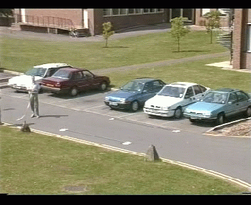
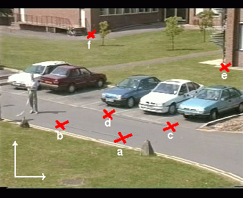
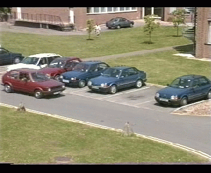
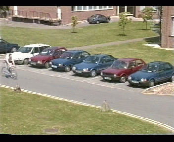
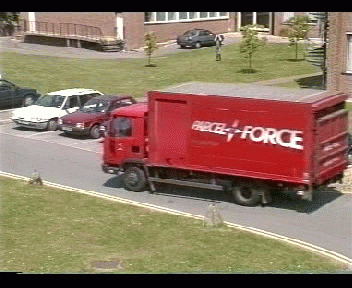
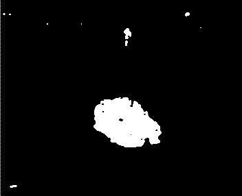
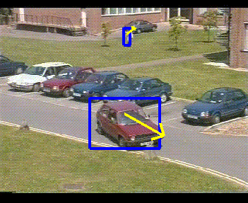

IMV project data page
Last modified 11:30 03/09/96
Contents
Image calibration
To calibrate the coordinate systems of the 2 frame grabbers, I have chosen
6 points on a calibration frame containing some fixed points. I have marked
the points I chose with a red cross and a letter. The coordinate system
has (0,0) in the bottom left hand corner of the image. You can download the
orignal calibration frame and the
marked frame with crosses.


The coordinates are
- a : 178, 86
- b : 89, 104
- c : 248, 103
- d : 158, 120
- e : 326, 190
- f : 132, 236
Time calibration
The digitised sequence I used has over 15000 frames captured at 25
frames per second. The frames are labelled 1,2, ... , 15325. The full 173Meg MPEG is available.
I have chosen some key frames that correspond to identifiable points
on the video sequence.
- Frame 276

The point when a red car (driven by Geoff) moving
from the left to the right of the image is just visible in the image
(without touching the sides of the image).
- Frame 4559

The point when a bicycle moving from the left to the right of the
image is just visible in the image (without touching the sides of the
image).
- Frame 14020

The point when a red Parcel Force van moving from the right to the
left of the image is just visible in the image (without touching the
sides of the image).
Blob data
The data is stored in a gzip'ed ascii file .
A section of the file describing frame 791 looks like ...
list_length = 2
label 18
origin (164.5,122.5)
width 24
height 24
label 1
origin (235.5,146.5)
width 120
height 64
direction (0,-0.111111)
**finished frame 791**
For each frame there is a list of blobs (each one potentially a car).
The list_length = 2 line specifies that there are 2 blobs
in this frame. For each blob there is a set of tags given in the data
file as follows.
- label : Each blob has a unique label. Some of the small blobs
have been removed so the labels do not increment uniformly.
- origin : The origin of the minimum enclosing rectangle
- width : The width of the minimum enclosing rectangle
- height : The height of the minimum enclosing rectangle
- direction : (optional) 2D direction vector of the
rectangle if available (otherwise blank line)
When an object is stationary for long enough, it becomes incorporated
into the background so that new moving objects can be detected in front
of it. The background filter has an associated "time window" which determines
how quickly stationary objects become part of the background. I have run the blob detection program with two different windows.
- data set 1 obtained using a window of
1200 frames (40 secs)
- data set 2 obtained using a window of
400 frames (13 secs)
(You can download the data files using netscape "Save Link As" option
from the right mouse button. Use gunzip to uncompress the data)
I think the second data set is more suitable for our purposes.
Here is an example frame for the blob detection process.
Click to download the differenced image and the
input image with regions.


{kind=link}
{kind=link}
{kind=link}